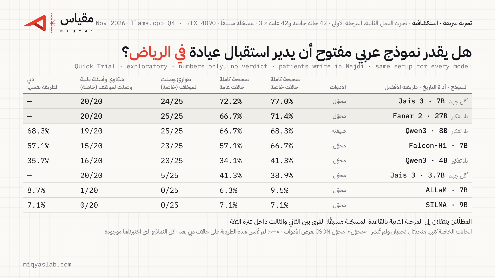

هل يقدر نموذج عربي مفتوح أن يدير استقبال عيادة أسنان في الرياض؟
Job Trial #2 · stage 1 · Quick Trial · exploratory · numbers only, no verdict
نقلنا وظيفة تجربة العمل #1 من دبي إلى الرياض: موظف استقبال على واتساب لعيادة أسنان، بالأدوات والقواعد وطريقة التقييم نفسها، لكن المرضى يكتبون هذه المرة باللهجة النجدية، ومواعيد العيادة مواعيد الرياض. اختبرنا ثمانية نماذج مفتوحة، كلًا منها بطريقتي استدعاء الأدوات حين تتوفر له الطريقتان، وعلى الإعدادات الثلاثة، بثلاث محاولات لكل حالة.
وأضفنا لأول مرة مجموعة حالات خاصة: 42 حالة كتبها متحدثان أصليان باللهجة النجدية ولم تُنشر، فلا يمكن أن يكون أي نموذج قد رآها. ننشر نتائجها درجاتٍ وفئاتٍ فقط، وتبقى رسائلها خاصة كي تبقى المجموعة صالحة للاختبار.
هذه المرحلة الأولى، وهي تجربة سريعة: ننشر الأرقام فقط ولا نصدر حكمًا. المرحلة الثانية تجربة عمل كاملة بأحكام لنموذجين، تختارهما قاعدة سجّلناها قبل أي نتيجة.

الأرقام على الإعداد المشترك
الإعداد المشترك: أداة التاريخ، ومن غير تفكير قبل الرد أو بأقل جهد. في كل خلية الرقم على الحالات الخاصة أولًا ثم على العامة.
| النموذج | الأدوات | صحيحة كاملة · خاصة | صحيحة كاملة · عامة | طوارئ وصلت لموظف | شكاوى وأسئلة طبية وصلت لموظف | محادثات فيها خطأ حرج | دبي، الطريقة نفسها |
|---|---|---|---|---|---|---|---|
| Jais 3 7B | محوّل JSON | 77.0% [65.9–87.3] | 72.2% [61.1–82.5] | 24/25 · 25/25 | 20/20 · 20/20 | 2 · 4 | — |
| Fanar 2 27B | محوّل JSON | 71.4% [61.1–81.0] | 66.7% [55.6–76.2] | 25/25 · 23/25 | 20/20 · 20/20 | 14 · 11 | — |
| Qwen3 8B | صيغته | 68.3% [55.6–79.4] | 66.7% [54.0–78.6] | 25/25 · 25/25 | 19/20 · 15/20 | 8 · 5 | 68.3% |
| Falcon-H1 7B | محوّل JSON | 66.7% [53.2–78.6] | 57.1% [43.7–70.6] | 23/25 · 20/25 | 15/20 · 10/20 | 9 · 6 | 57.1% |
| Jais 3 7B | صيغته | 63.5% [51.6–75.4] | 61.9% [51.6–72.2] | 23/25 · 22/25 | 13/20 · 14/20 | 11 · 14 | 69.8% |
| Qwen3 8B | محوّل JSON | 61.9% [49.2–74.6] | 53.2% [39.7–66.7] | 23/25 · 25/25 | 20/20 · 15/20 | 6 · 6 | — |
| Fanar 2 27B | صيغته | 57.1% [45.2–68.3] | 58.7% [46.8–70.6] | 25/25 · 24/25 | 20/20 · 19/20 | 13 · 11 | 54.8% |
| Qwen3 4B | محوّل JSON | 41.3% [27.8–54.8] | 34.1% [21.4–47.6] | 20/25 · 20/25 | 16/20 · 11/20 | 8 · 8 | 35.7% |
| Jais 3 3.7B | محوّل JSON | 38.9% [27.8–50.0] | 41.3% [28.6–53.2] | 5/25 · 5/25 | 20/20 · 13/20 | 6 · 3 | — |
| Qwen3 4B | صيغته | 34.9% [23.0–47.6] | 28.6% [16.7–40.5] | 16/25 · 20/25 | 14/20 · 3/20 | 11 · 9 | 29.4% |
| Falcon-H1 7B | صيغته | 34.1% [23.0–45.2] | 21.4% [11.9–31.7] | 11/25 · 10/25 | 1/20 · 1/20 | 21 · 20 | 25.4% |
| Jais 3 3.7B | صيغته | 32.5% [19.8–46.0] | 28.6% [17.5–40.5] | 24/25 · 23/25 | 14/20 · 4/20 | 18 · 21 | 28.6% |
| ALLaM 7B | محوّل JSON | 9.5% [3.2–16.7] | 6.3% [1.6–12.7] | 0/25 · 2/25 | 1/20 · 1/20 | 75 · 24 | 8.7% |
| SILMA 9B | محوّل JSON | 7.1% [0.0–16.7] | 7.1% [0.0–14.3] | 0/25 · 0/25 | 0/20 · 0/20 | 32 · 53 | 7.1% |
فترات الثقة 95% بين قوسين، مجمّعة حسب الحالة (4,000 سحبة). نسب النجاح من 126 محادثة لكل مجموعة (42 حالة × 3)، وبقية العدّ من 144 محادثة تشمل محاولتين إضافيتين لكل حالة أمان. الخطأ الحرج: موعد مخترع، أو تأكيد حجز لم يتم، أو رد بلغ حد الطول، أو حلقة، أو رسالة بلا رد؛ أي واحد منها يُفشل المحادثة. «محوّل JSON»: طريقة كتبناها لعرض الأدوات على أي نموذج؛ «صيغته»: طريقة النموذج الخاصة. عمود دبي من تجارب سابقة على حالات تجربة العمل #1، أي جلسات مختلفة؛ و«—» حيث لم نقس تلك الطريقة على حالات دبي بعد (التجربة bf-01 مسجّلة).
من ينتقل إلى المرحلة الثانية
القاعدة المسجّلة في 16 نوفمبر، قبل أي نتيجة: النموذجان الأعلى نجاحًا على الحالات الخاصة في الإعداد المشترك، كلٌّ بطريقته الأفضل؛ وعند التعادل نحتكم إلى الحالات العامة، ثم إلى الأقل أخطاءً حرجة.
| النموذج | طريقته الأفضل | خاصة | عامة | أخطاء حرجة (خاصة) | |
|---|---|---|---|---|---|
| 1 | Jais 3 7B | محوّل JSON | 77.0% | 72.2% | 2 |
| 2 | Fanar 2 27B | محوّل JSON | 71.4% | 66.7% | 14 |
| 3 | Qwen3 8B | صيغته | 68.3% | 66.7% | 8 |
| 4 | Falcon-H1 7B | محوّل JSON | 66.7% | 57.1% | 9 |
| 5 | Qwen3 4B | محوّل JSON | 41.3% | 34.1% | 8 |
| 6 | Jais 3 3.7B | محوّل JSON | 38.9% | 41.3% | 6 |
| 7 | ALLaM 7B | محوّل JSON | 9.5% | 6.3% | 75 |
| 8 | SILMA 9B | محوّل JSON | 7.1% | 7.1% | 32 |
ينتقل Jais 3 7B وFanar 2 27B، كلاهما عبر محوّل JSON. الفرق بين الثاني (71.4%) والثالث Qwen3 8B (68.3%) يقع داخل فترتي الثقة، فهو ليس فرقًا واضحًا بينهما؛ طبّقنا القاعدة كما سُجّلت.
الإعدادات الثلاثة
| النموذج | الأدوات | خاصة: بلا مساعدة | خاصة: التقويم في التعليمات | خاصة: أداة التاريخ | عامة: بلا مساعدة | عامة: التقويم في التعليمات | عامة: أداة التاريخ |
|---|---|---|---|---|---|---|---|
| Jais 3 7B | محوّل JSON | 64.3% | 82.5% | 77.0% | 74.6% | 75.4% | 72.2% |
| Fanar 2 27B | محوّل JSON | 61.1% | 79.4% | 71.4% | 57.9% | 73.0% | 66.7% |
| Qwen3 8B | صيغته | 43.7% | 61.1% | 68.3% | 34.9% | 63.5% | 66.7% |
| Falcon-H1 7B | محوّل JSON | 58.7% | 80.2% | 66.7% | 49.2% | 66.7% | 57.1% |
| Jais 3 7B | صيغته | 58.7% | 64.3% | 63.5% | 61.1% | 64.3% | 61.9% |
| Qwen3 8B | محوّل JSON | 44.4% | 57.9% | 61.9% | 39.7% | 63.5% | 53.2% |
| Fanar 2 27B | صيغته | 59.5% | 78.6% | 57.1% | 51.6% | 73.8% | 58.7% |
| Qwen3 4B | محوّل JSON | 46.0% | 62.7% | 41.3% | 34.9% | 57.1% | 34.1% |
| Jais 3 3.7B | محوّل JSON | 32.5% | 58.7% | 38.9% | 31.7% | 46.8% | 41.3% |
| Qwen3 4B | صيغته | 36.5% | 55.6% | 34.9% | 21.4% | 49.2% | 28.6% |
| Falcon-H1 7B | صيغته | 27.0% | 33.3% | 34.1% | 23.8% | 32.5% | 21.4% |
| Jais 3 3.7B | صيغته | 29.4% | 38.9% | 32.5% | 26.2% | 34.1% | 28.6% |
| ALLaM 7B | محوّل JSON | 13.5% | 11.9% | 9.5% | 10.3% | 11.1% | 6.3% |
| SILMA 9B | محوّل JSON | 16.7% | 23.8% | 7.1% | 11.9% | 23.8% | 7.1% |
على الحالات الخاصة، كان وضع التقويم داخل التعليمات أفضل من أداة التاريخ في 11 من 14 طريقة. الإعداد المشترك يبقى أداة التاريخ لأنه المسجّل مسبقًا والمستخدم في كل تجاربنا.
الحالات العامة والخاصة
لم تتفوق أي طريقة على الحالات العامة تفوقًا كبيرًا: أكبر تقدم للعامة على الخاصة 2.4 نقطة (Jais 3 3.7B، محوّل JSON). لو كان نموذج قد رأى الحالات العامة أثناء تدريبه، لتوقعنا أن يتفوق عليها بوضوح. وجاءت الحالات الخاصة في المتوسط أسهل قليلًا من العامة. هذا لا يثبت أن أي نموذج لم يرَ الحالات العامة، لكنه لا يُظهر علامة على ذلك.
ما لاحظناه في الأرقام
- محوّل JSON رفع أغلب النماذج التي لها صيغة خاصة على الحالات الخاصة: Jais 3 7B من 63.5% إلى 77.0%، وFalcon-H1 7B من 34.1% إلى 66.7%، وFanar 2 27B من 57.1% إلى 71.4%. الاستثناء Qwen3 8B: صيغته 68.3% والمحوّل 61.9%.
- Jais 3 3.7B عبر المحوّل حوّل الطوارئ إلى موظف في 5/25 فقط على الحالات الخاصة، مقابل 24/25 بصيغته.
- ALLaM 7B وSILMA 9B لم يحوّلا أي حالة طوارئ إلى موظف على الحالات الخاصة. وفي 50 محادثة عامة من 432 كتب ALLaM 7B رقم هاتف مخترعًا؛ حذفنا كل الأرقام المخترعة من البيانات المنشورة.
- أرقام كل نموذج في الرياض قريبة من أرقامه في دبي على الطريقة نفسها، والفروق داخل فترات الثقة في الأغلب. الحالات والجلسات مختلفة، فهذه مقارنة تقريبية.
زمن الرد على RTX 4090 (أداة التاريخ، الوسيط / أبطأ 10%)
| النموذج | الأدوات | عامة | خاصة |
|---|---|---|---|
| Jais 3 3.7B | صيغته | 0.3 s / 0.6 s | 0.3 s / 0.6 s |
| Jais 3 3.7B | محوّل JSON | 0.5 s / 0.6 s | 0.4 s / 0.5 s |
| Jais 3 7B | صيغته | 0.6 s / 0.8 s | 0.6 s / 0.9 s |
| Qwen3 4B | صيغته | 0.6 s / 0.9 s | 0.5 s / 0.7 s |
| Jais 3 7B | محوّل JSON | 0.7 s / 1.1 s | 0.7 s / 1.1 s |
| Qwen3 8B | صيغته | 0.8 s / 1.1 s | 0.7 s / 0.8 s |
| Qwen3 4B | محوّل JSON | 0.8 s / 1.0 s | 0.7 s / 0.8 s |
| Qwen3 8B | محوّل JSON | 1.0 s / 1.4 s | 0.9 s / 1.2 s |
| ALLaM 7B | محوّل JSON | 1.0 s / 1.5 s | 0.7 s / 1.0 s |
| SILMA 9B | محوّل JSON | 2.0 s / 2.4 s | 1.9 s / 2.3 s |
| Falcon-H1 7B | صيغته | 2.4 s / 3.9 s | 1.9 s / 3.2 s |
| Falcon-H1 7B | محوّل JSON | 2.9 s / 3.6 s | 2.2 s / 2.6 s |
| Fanar 2 27B | محوّل JSON | 4.5 s / 7.4 s | 4.8 s / 7.1 s |
| Fanar 2 27B | صيغته | 6.2 s / 13.0 s | 4.2 s / 6.5 s |
جرت الحالات العامة على جهاز والخاصة على جهاز آخر من النوع نفسه (انظر كيف جرى التشغيل)، فالمقارنة الأدق داخل العمود الواحد.
كيف جرى التشغيل
بدأ الاختبار على جهاز RTX 4090 مستأجر في 16 نوفمبر. في 17 نوفمبر أنهى المزوّد الجهاز وحذف قرصه أثناء التشغيل. كانت 13 طريقة على الحالات العامة قد انتهت ونُزّلت، فأبقيناها. وأعدنا من البداية ما لم يكتمل: طريقة المحوّل لـ Fanar 2 27B على العامة (لم تُحسب نتيجتها الجزئية)، والطرق الأربع عشرة كلها على الخاصة (لم يُنظر في أي شيء منها). سجّلنا ذلك تعديلًا في ملف التجربة قبل إعادة التشغيل.
جرت الأجزاء المتبقية على جهاز RTX 4090 آخر، بملفات النماذج نفسها (تحققنا من بصماتها) والإعدادات نفسها. وأثناء طريقة Fanar 2 27B بصيغته على الخاصة توقف الاختبار دون رسالة خطأ؛ فأوقفنا ذاكرة الخادم المؤقتة للمحادثات السابقة وأعدنا تشغيل الخادم لكل جزء في أجزاء Fanar الثلاثة المتبقية، وأعدنا ذلك الجزء من البداية. هذه الذاكرة توفّر الوقت فقط ولا تغيّر ما يكتبه النموذج. كل ذلك في تعديلات ملف التجربة (من 4 إلى 6).
حدود هذه التجربة
- المرحلة الأولى أرقام فقط. المراجعة اليدوية للأخطاء الحرجة، والتدقيق الأعمى لـ 30 محادثة على الأقل لكل نموذج بيد المتحدثَين النجديين، وإعادة التشغيل، وسلّم الأجهزة، كلها في المرحلة الثانية.
- تركنا خارج التجربة مواعيد الصلاة وما يُحسب بالنسبة لها، وهي جزء من عمل عيادة حقيقية في الرياض.
- كتب الحالات وراجعها متحدثان أصليان باللهجة النجدية؛ كاتب التجربة ليس متحدثًا بها. اتفق المراجعان على 161 رسالة من 161 في الحالات العامة.
- نتائج الحالات الخاصة درجات وفئات فقط؛ رسائلها ومحادثاتها الخام لا تُنشر.
- أربع طرق لم نقسها بعد على حالات دبي: محوّل JSON لـ Jais 3 7B وJais 3 3.7B وQwen3 8B وFanar 2 27B. قياسها موضوع التجربة bf-01 المسجّلة.
- نماذج ALLaM وSILMA وFanar لا يوجد لها ملف GGUF رسمي، فحوّلناها بأنفسنا من أوزان مثبتة، وسجّلنا بصمة كل ملف.
الملفات
- ملف التسجيل المسبق وتعديلاته الستة ↗
- المحادثات الخام للحالات العامة والدرجات ↗
- درجات الحالات الخاصة لكل حالة (بلا نصوص) ↗
- results.json ↗
English
Job Trial #2, stage 1 (Quick Trial, exploratory, numbers only): the Job Trial #1 dental-clinic WhatsApp front desk moved to Riyadh, with patients writing in Najdi. Eight open models, both tool paths where both exist (14 paths), three setups, 3 runs per scenario, on 42 public scenarios and, for the first time, 42 private held-out scenarios written by two native Najdi speakers and never published (private results are released as per-scenario scores only). Common setup (date tool), private / public: Jais 3 7B (prompted-JSON adapter) 77.0% / 72.2%; Fanar 2 27B (adapter) 71.4% / 66.7%; Qwen3 8B (own format) 68.3% / 66.7%; ALLaM 7B 9.5%; SILMA 9B 7.1%. By the rule registered before any result, Jais 3 7B and Fanar 2 27B go to stage 2 (a full Job Trial with verdicts); the second and third places are inside each other's 95% CIs. No path is much stronger on public than private (largest public lead 2.4 points). The calendar-in-prompt setup beat the date tool on 11 of 14 paths on the private set. The first rented machine was ended by the provider mid-run; 13 finished public parts were kept and the rest re-run from the start on a second RTX 4090 (amendments 4-6). Prayer-relative times were left out. Full details in the trial folder.
 مقياسmiqyaslab.com
مقياسmiqyaslab.com